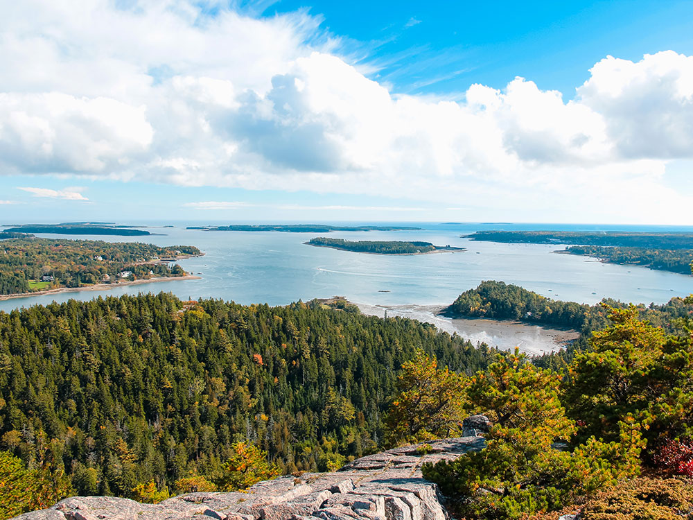
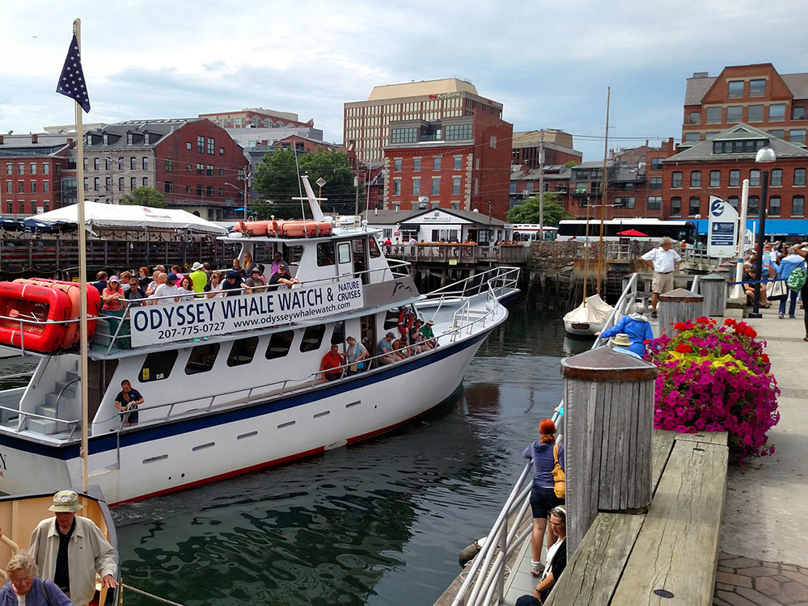
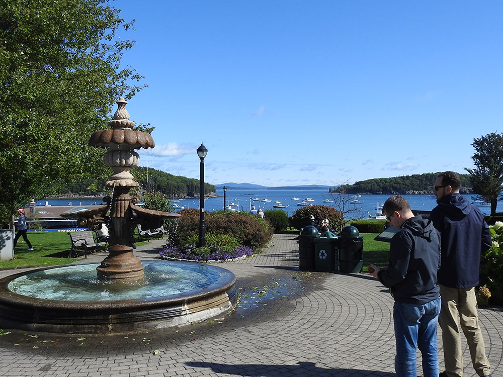
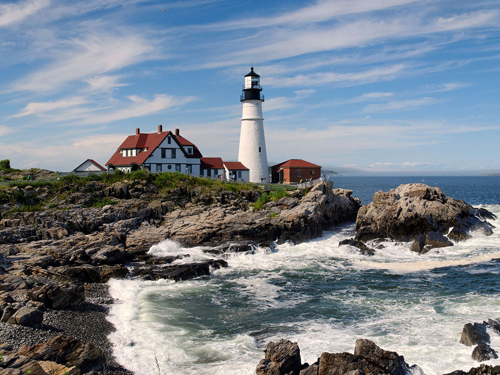
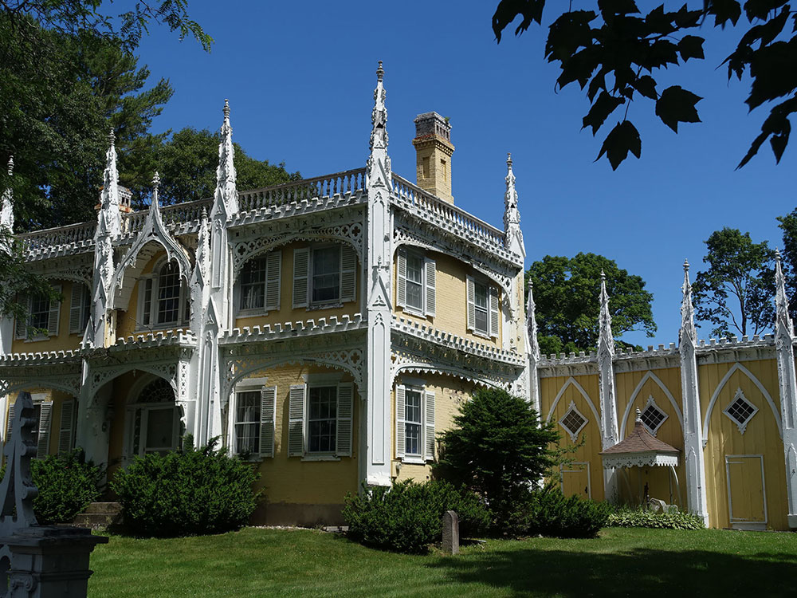
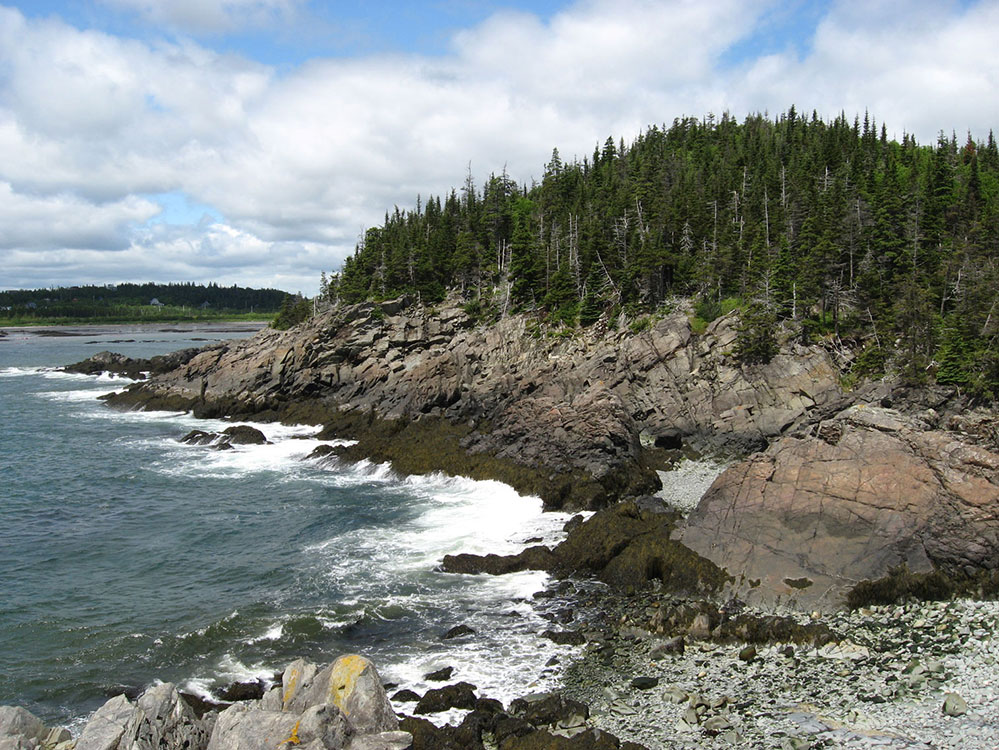
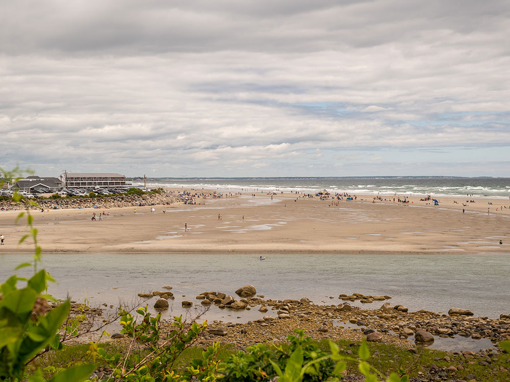

Maine Travel Guide
Savor fresh lobster, hike Acadia National Park's rocky coast, and explore charming lighthouse towns along Maine's picturesque, forested shoreline.
Maine Map
Places to See in Maine

heipei from Deutschland, CC BY-SA 2.0, via Wikimedia Commons; Image Size Adjusted
.jpg){kind=link}
Acadia National Park★
Located along the mid-section of the Maine coast, the park preserves the natural beauty of the rocky headlands, including the highest mountains along the Atlantic coast

Bd2media, CC BY-SA 4.0, via Wikimedia Commons; Image Size Adjusted

Portland★
Most populous city in the state of Maine, known for its 19th-century architecture and nightlife

Dennis Sylvester Hurd, CC0, via Wikimedia Commons; Image Size Adjusted
_(48746343211).jpg){kind=link}
Bar Harbor★
Popular tourist destination in the Down East region of Maine and home to the largest parts of Acadia National Park, including Cadillac Mountain

Rapidfire, CC BY-SA 3.0, via Wikimedia Commons; Image Size Adjusted

Cape Elizabeth★
Includes Cape Elizabeth Light, Portland Head Light, Crescent Beach State Park, and Two Lights State Park

Roller Coaster Philosophy, CC BY 2.0, via Wikimedia Commons; Image Size Adjusted

Kennebunk and Kennebunkport★
Towns located along the Kennebunk River, and historically shipbuilding and fishing villages, for well over a century the towns have been a popular summer colony and seaside tourist destination

Fredlyfish4, CC BY-SA 4.0, via Wikimedia Commons; Image Size Adjusted
.jpg){kind=link}
Lubec, ME / Quoddy Head State Park★
Easternmost municipality in the contiguous United States and is the closest continental location to Africa in the United States

Famartin, CC BY-SA 4.0, via Wikimedia Commons; Image Size Adjusted

Mount Katahdin / Baxter State Park★
Highest mountain in Maine at 5,269 feet (1,606 m), is the centerpiece of Baxter State Park, and a steep, tall massif formed from a granite intrusion weathered to the surface

Captain-tucker, CC BY-SA 3.0, via Wikimedia Commons; Image Size Adjusted

Ogunquit★
Resort town with a three and a half-mile beach of pale sand and dunes
Overview
Maine is the northeasternmost state, with about 1.4 million people and more forest cover than any other state, a rocky coast, and a quiet pace. Augusta is the capital, Portland is the largest city, and the state is nicknamed the "Pine Tree State" and known for lobster, lighthouses, and Acadia.
Visitors come for Acadia National Park and Bar Harbor, the food and waterfront of Portland, and the beach towns of Ogunquit and Kennebunk and Kennebunkport. Others come for lobster shacks, lighthouses, moose-watching, hiking Mount Katahdin, paddling the northern lakes, and autumn foliage.
Geography
Maine is the largest New England state, with the Appalachian Mountains in the west, the lakes and forests of the north woods, and the Atlantic coast with thousands of islands, coves, and granite headlands. Mount Katahdin, at 5,268 feet (1,606 m), is the highest point and the northern end of the Appalachian Trail. The state has about 5,000 miles of tidal coastline, thousands of lakes, and the Penobscot, Kennebec, and St. John Rivers. West Quoddy Head is the easternmost point in the U.S.
History
The Wabanaki peoples, including the Penobscot, Passamaquoddy, Maliseet, and Mi'kmaq, lived here for thousands of years when English and French explorers arrived in the early 1600s. Maine was part of Massachusetts for 200 years until the Missouri Compromise made it the 23rd state in 1820. Shipbuilding, fishing, timber, and paper mills drove the economy, and sea captains built the coastal towns. Today tourism, lobstering, and the outdoors are central to Maine's economy and identity.
Acadia National Park
Acadia National Park is Maine's only national park and one of the most visited in the country. It covers much of Mount Desert Island, along with parts of Schoodic Peninsula and Isle au Haut, and combines granite mountains, rocky shoreline, forests, and lakes. Cadillac Mountain is among the first places in the U.S. to see the sunrise for part of the year, and the 27-mile Park Loop Road, carriage roads, and ocean-side trails offer views and hiking. The nearby town of Bar Harbor has lodging, restaurants, and whale-watching and boat tours.
Portland and the Southern Coast
Portland is Maine's largest city, with a working waterfront, the cobblestone streets and restaurants of the Old Port, and ferries to the islands of Casco Bay. Nearby Cape Elizabeth has Portland Head Light, one of the most photographed lighthouses in the country. South of Portland, the Atlantic coast is lined with beach and seaside towns, including Ogunquit with its wide sandy beach and Marginal Way cliff walk, Kennebunk and Kennebunkport with their summer-colony charm and lobster shacks, and York, home to Nubble Light and some of the state's oldest colonial buildings. These towns are an easy drive from Boston and are busiest in summer.
National Protected Areas
Maine's national park sites include Acadia National Park, the only national park in New England, with granite peaks and ocean views, and Katahdin Woods and Waters National Monument, which protects the north woods east of Baxter. Saint Croix Island International Historic Site marks an early French settlement, and the Appalachian National Scenic Trail ends on Katahdin. Maine's coastline also includes the Rachel Carson National Wildlife Refuge and Maine Coastal Islands refuge.
State Parks and Historic Sites
Maine's state parks include Baxter State Park, a wilderness park given to the state by Governor Percival Baxter, and Quoddy Head, with a red-and-white lighthouse. Camden Hills, Reid, and Popham Beach State Parks offer coastal hiking and beaches, and Fort Knox and Fort Popham are historic forts. Cape Elizabeth has Portland Head Light, one of the most photographed lighthouses in the country.
Seasons and When to Visit
Summer is the peak season for the coast, hiking, and lobster, with warm days and cool nights. Fall brings peak foliage from late September to mid-October, with fewer crowds and fall festivals. Winter is long, cold, and snowy, with skiing at Sugarloaf and Sunday River, snowmobiling, and ice fishing. Spring is muddy and slow to arrive, and black flies are active in the north woods in May and June.
This article uses material from the Wikipedia article "Maine", which is released under the Creative Commons Attribution-Share-Alike License 3.0. Additional information was drawn from National Park Service, Maine State Parks, and Visit Maine.